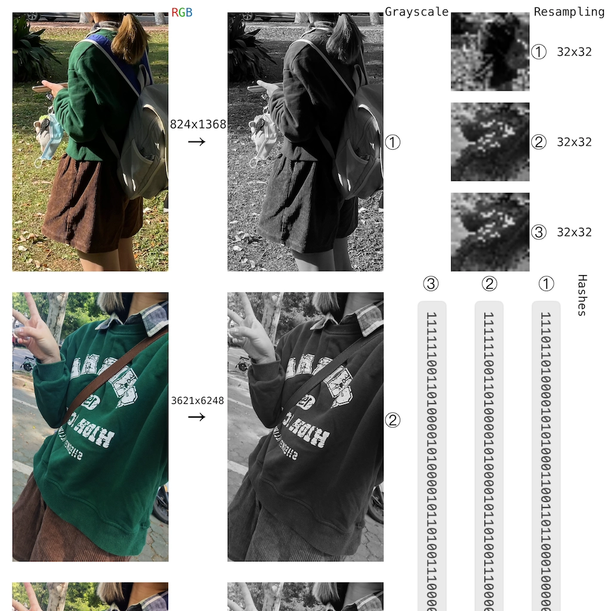

Blog
Undergraduate • Guitar Player •
Gear
•
GitHub

Duplicate Image Identification using Perceptual Hashing: Techniques, Challenges, and Applications
Originally published January 23, 2024.
Last updated January 26, 2024.
Last updated January 26, 2024 by
Fang Ling
.